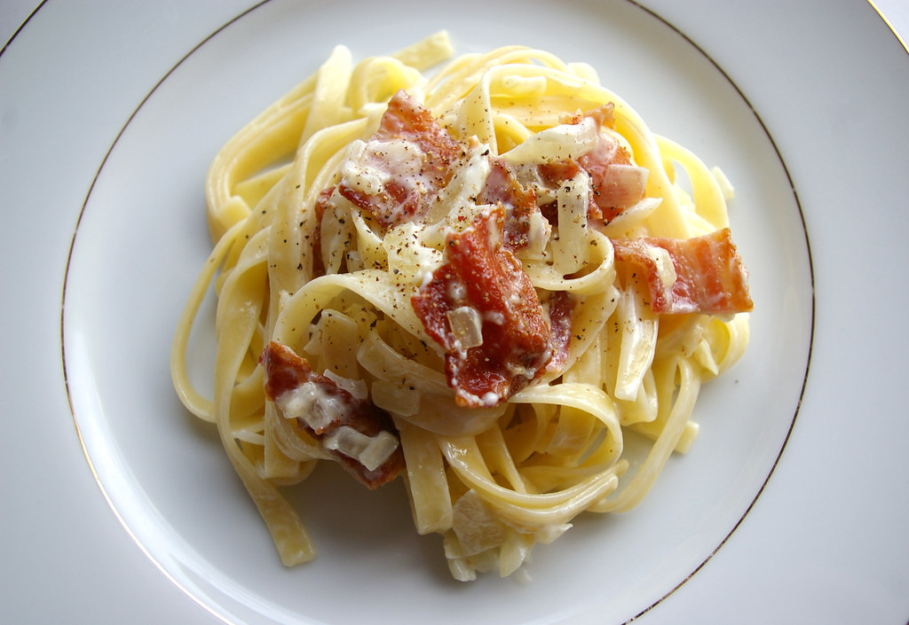

Primeros
Receta Destacada
Secretos Revelados: Los Auténticos Espaguetis a la Carbonara: Receta Maestra con Guanciale y Pecorino
Adéntrate en el auténtico arte culinario italiano con nuestra receta magistral para preparar los Espaguetis a la Carbonara, un plato que despierta pasiones y exige técnica, ingredientes precisos y pasos perfectos. ¡Olvídate de las imitaciones! Descubre cómo lograr el sabor auténtico, combinando a la perfección la papada de cerdo (guanciale), yemas de huevo, queso pecorino y pimienta negra.
 Seguir LeyendoPastel de Verduras al Horno: Una Explosión de Color y Sabor en tu Plato
Descubre cómo transformar las verduras de tu nevera en un exquisito festín con nuestro Pastel de Verduras al Horno. Una receta sencilla, rápida y adaptable a tus gustos, este pastel es una manera brillante de añadir una dosis extra de vegetales a tu día.
 Seguir Leyendo
Seguir Leyendo
Gazpacho Verde: Un Estallido de Frescura y Sabor en cada Cucharada
Refrescante, vibrante y lleno de vitalidad, el Gazpacho Verde es la culminación perfecta del verano en un plato. Esta versión reinventada del clásico gazpacho sorprende con su combinación única de ingredientes: pepino, manzana, aguacate y espinacas, reunidos en una sinfonía de sabores.
 Seguir Leyendo
Seguir Leyendo
Crema de Calabaza: Un Bocado de Otoño en Cada Cucharada
Sumérgete en la esencia del otoño con nuestra reconfortante y fácil receta de Crema de Calabaza. En tan solo 35 minutos, disfruta de un plato cálido que deleitará tu paladar con su textura sedosa y su sabor inconfundiblemente reconfortante.
 Seguir Leyendo
Seguir Leyendo
Sopa de Marisco: Un Festín del Océano para Ocasiones Especiales
Sumérgete en el placer culinario con nuestra Sopa de Marisco, una obra maestra gastronómica para deleitar a tus invitados en las ocasiones más especiales. Esta receta tradicional y cuidadosamente elaborada combina una variedad de delicias marinas: almejas, mejillones, langostinos y más, en un caldo aromático y sabroso.
 Seguir Leyendo
Seguir Leyendo